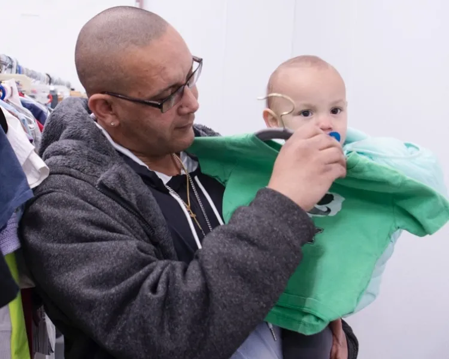

Food, Clothing and EssentialsWays To Give
Other Ways to Give
Give monthly by joining Pathways of Hope
Help homeless men and women get on the path to better lives today by joining our special monthly donor program, Pathways of Hope. You’ll receive:
- Updates about how your faithful donations are impacting lives
- Stories of people you’ve helped
- Insights into how you are making a lasting difference
Donate Goods
Legacy Giving
Change Lives for Years to Come
Many people are thrilled to discover that including a gift to the Mission in their Will, or other planned giving options, can significantly impact the lives of people in need for eternity.
Request our free Will Guide to gain insight and worksheets for setting up a God-honoring will.
Other Ways to Give
You can also donate by mail or make a donation on the phone at 303.297.1815 (8:30 a.m. to 5:00 p.m. MST).
Donate By Mail
Financial gifts can be received through the mail at the following address:
Denver Rescue Mission
PO Box 5206
Denver, CO 80217
For your security, we do not recommend sending donations of cash through the mail, however giving financial gifts online is fast, easy and secure.
Homeless Contribution Tax Credit
The Homeless Contribution Tax Credit Program is available in the entire state of Colorado for a broader range of homelessness response related activities.
LEARN MOREWorkplace Giving
Workplace Giving allows employees to partner with their employers and coworkers to make a lasting impact in the community.
LEARN MOREWorthy of Your Trust
Denver Rescue Mission is committed to excellence in how we use the resources you provide. Thank you for partnering with us.
LEARN MORE